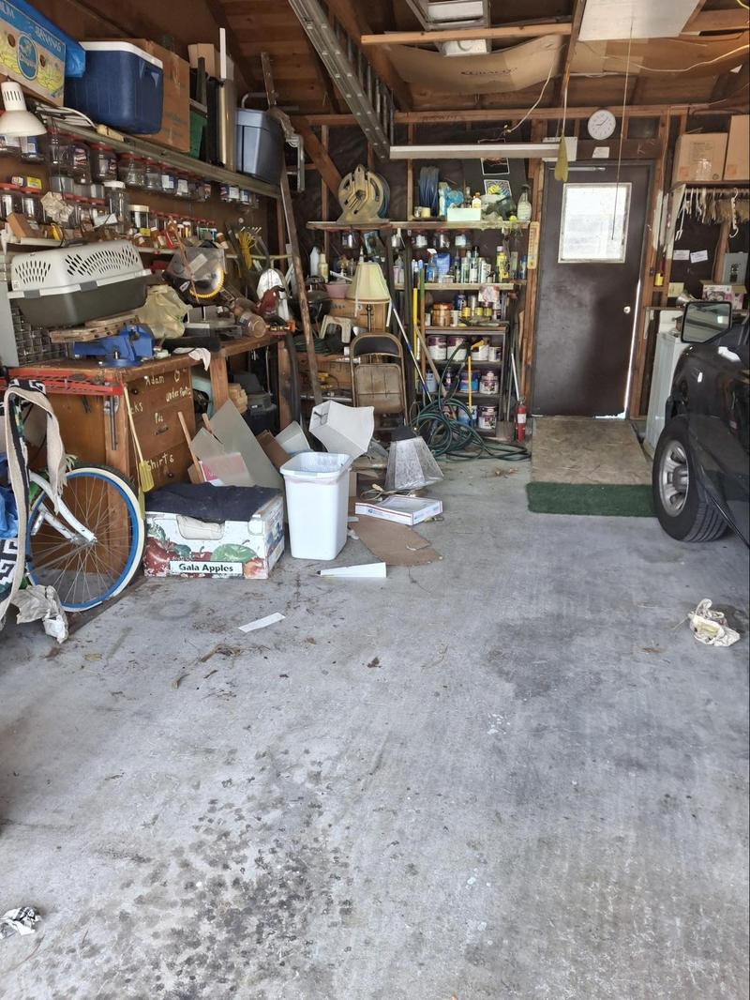
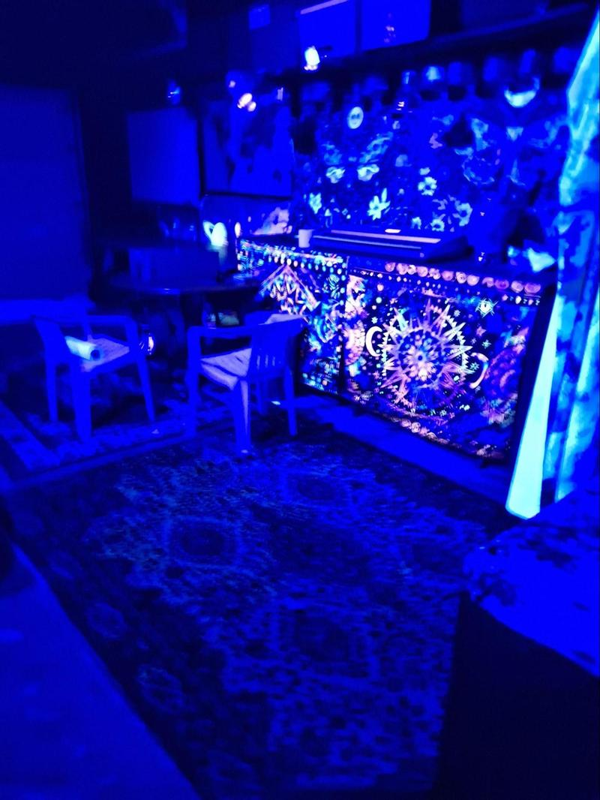
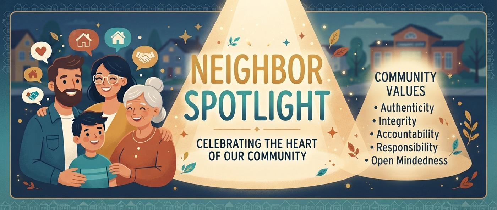
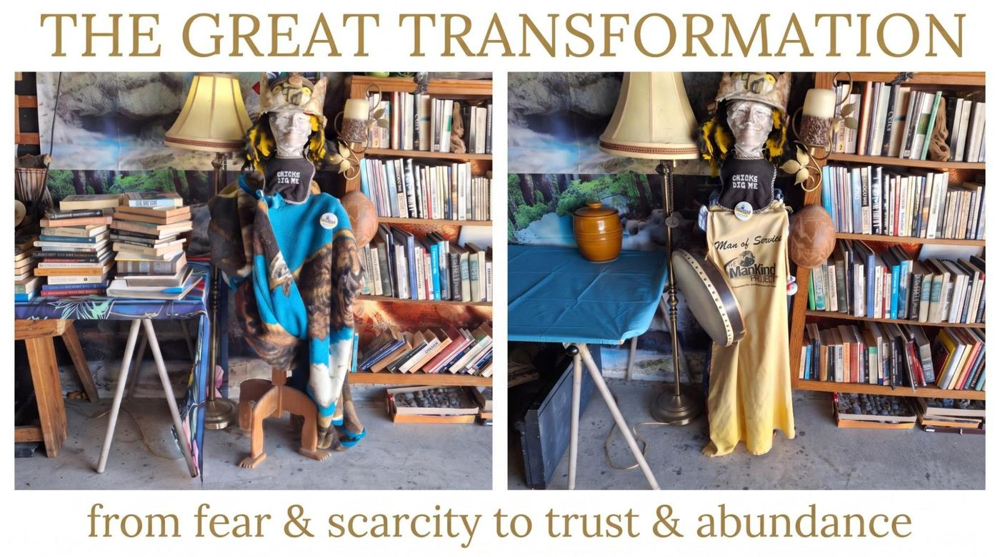
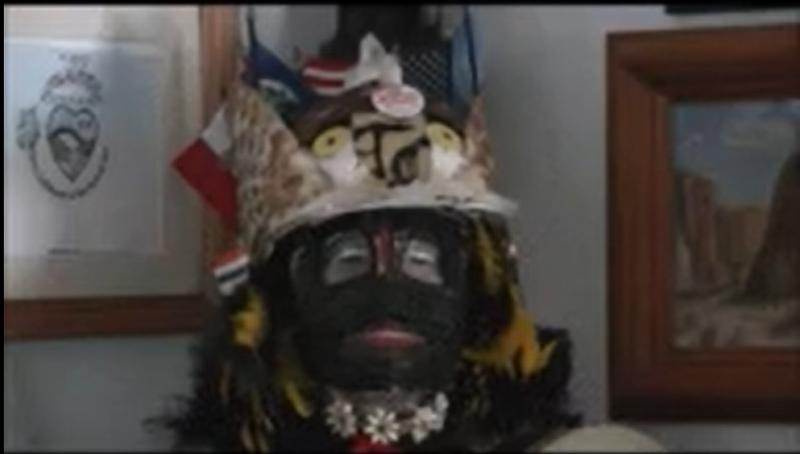
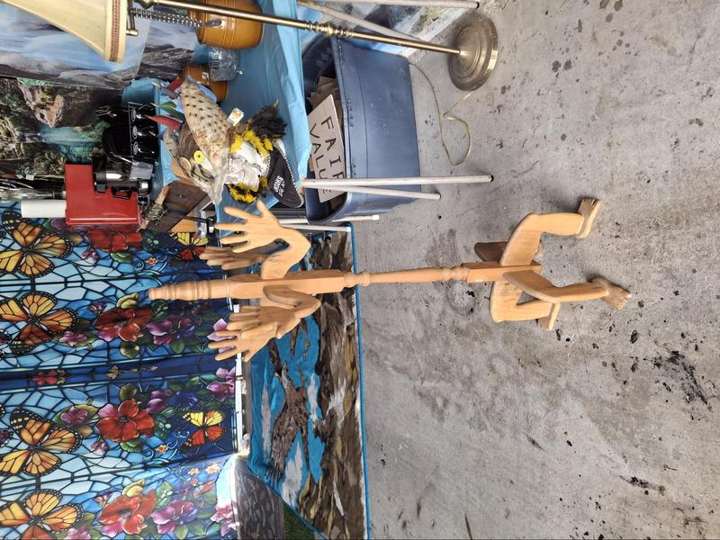
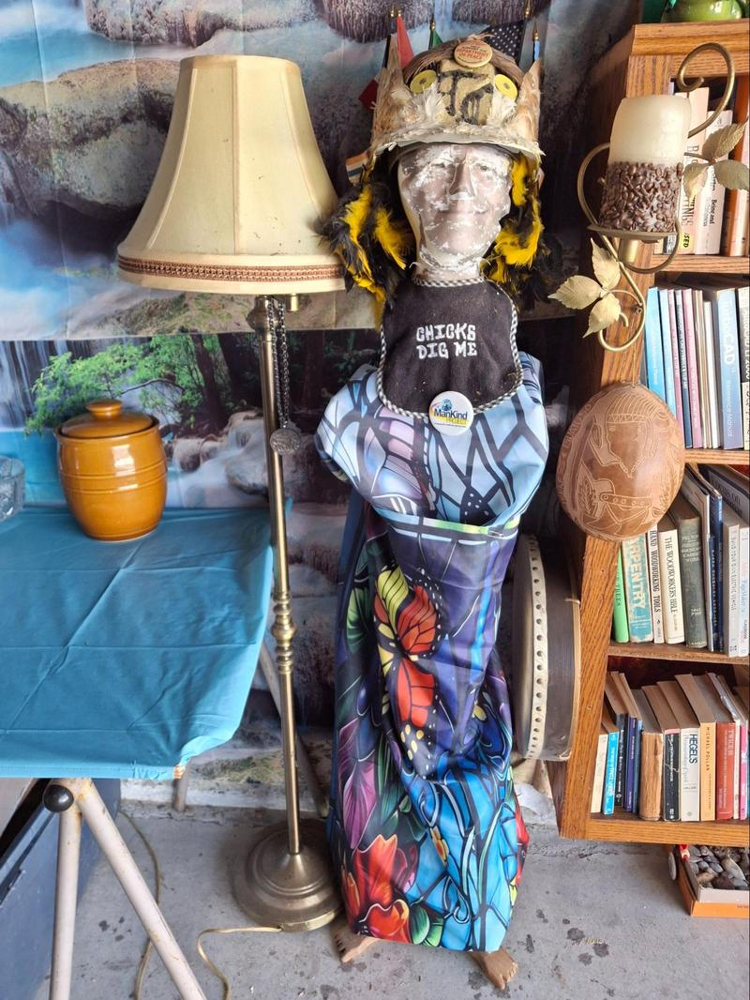
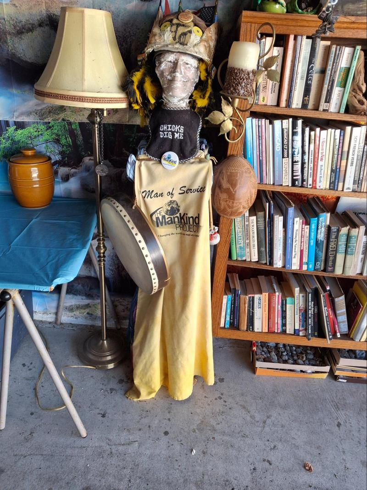
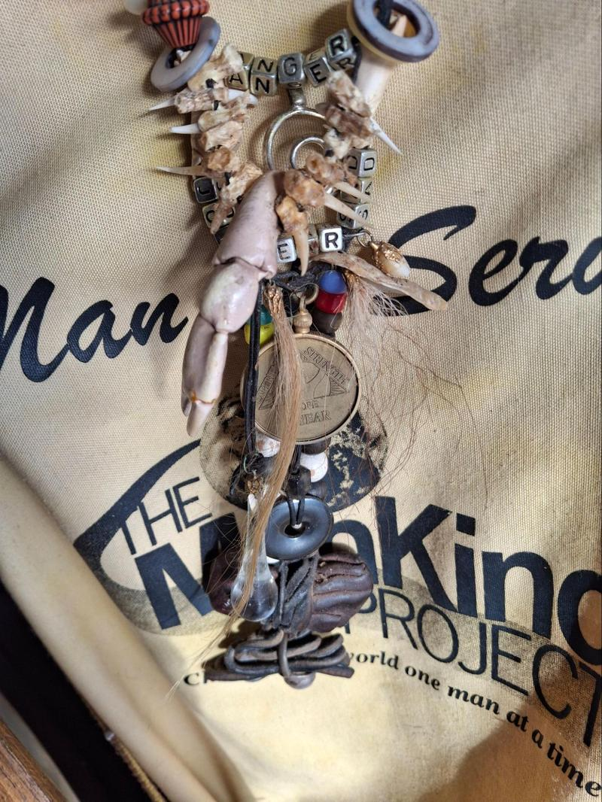
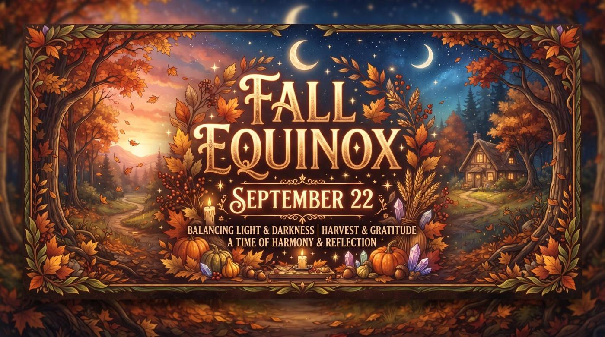

PEPPERWOOD COMMUNITY NEWSLETTER
Welcome friends and neighbors
This is the first edition of the Pepperwood Newsletter.
From Garage to Ground-Up Community: Building Mutual Aid at Pepperwood Villas
My name is Thomas Carl, though my friends call me TC. As a retired carpenter who has lived at Pepperwood Villas for 35 years, my recent years were spent behind a computer trying to develop a virtual mutual aid intentional community, while being questioned if I even knew my next-door neighbor.
Then, unexpected inspiration struck. My long-time housemate Chiwah’s son, who moved in this year, wanted to host Dungeons & Dragons and asked to use the garage. Because tabletop gaming is all about community building, I was all in!
His success and bringing new energy into the space encouraged me to tackle a 30-year catch-all of clutter and abandoned tools. Clearing out the space sparked something inside me: the old carpenter spirit took over. Instead of boards and nails, I found myself shaping a space with tapestries, push pins, work lights, and black lights. What started as a cleanup project transformed into a grassroots neighborhood gathering space.


What Is a Mutual Aid Intentional Community? Let’s meet and have fun 1st!
Here is an explainer video. 2:36 minutes
A mutual aid intentional community is a living arrangement where residents deliberately choose to share resources, labor, and support based on cooperation and solidarity rather than hierarchy or profit.
Key characteristics include:
- Decentralized Support: Members pool skills, tools, and daily necessities to care for one another collectively.
- Shared Purpose: Residents are united by common values, social goals, or cooperative agreements.
- Non-Hierarchical Cooperation: Decisions and resource distribution are managed democratically through peer-to-peer collaboration.
Mutual Aid in a Condo Setting
In a traditional condominium complex governed by property management companies, boards, and CC&Rs, a mutual aid community operates a bit differently. Instead of rewriting property deeds, residents cultivate an informal, parallel network of cooperation right alongside the formal HOA structure.
While the HOA handles physical maintenance via monthly dues, our mutual aid network focuses on the human element: neighbors actively pooling skills, tools, and support outside of corporate management channels. Living here means we share walls and daily routines. Beyond the monthly dues, there is an incredible opportunity right outside our front doors: each other.
You’re Invited!
We’d love to gather informally to see what kind of support network we can build together.
- When: Saturday, October 10th, 10:00 AM to 3:00 PM
- Where: In the garage.
No pressure, no formal commitments—just a chance to connect with the people living right next door. Drop by and let’s talk about how we can make our complex feel like a true community. From here, this local network can grow into something even bigger… Chiwah and friends think the ideas I study may be too much before we meet. Just ask me. I love to talk about visions of a future of trust and abundance.

We live in an infinite mystical magical universe, in the reality of duality, that gives us the illusion that the life we dream is real.

Neighbor Spotlight: Mick Healy — The Heart of Our Community
This week, the spotlight shines on Mick Healy, a man who has been the bedrock of our neighborhood for over 35 years—in fact, he was here before I even arrived.
Mick is the definition of a tireless community servant. He has served as the president of the board of directors for the HOA for the entire time I’ve lived here. He does this not out of ambition, but because he shoulders the burden of responsibility when no one else will step up.
For years, Mick literally kept the lights on, taking it upon himself to replace bulbs when they burned out. He performed countless maintenance tasks that have saved the community hundreds of dollars. He diligently manages the dumpsters, ensuring we avoid penalties for overfull containers.
We all see him daily working the dumpsters, meticulously saving anything of value. He lives by the philosophy of "taking what others throw away and finding or giving it value."
Mick is an enigma. While he may hold beliefs aligned with the "Trumpers" and the Christian right, his daily actions are those of a "bleeding heart liberal." His presence radiates compassion and genuine concern for others.
He is living proof and an example of how some people will perform the most unwanted tasks without seeking reward, money, or praise.
It is my distinct joy to sing his praises.

The Great Transformation; From Fear & Scarcity to Trust & Abundance



Everywhere the transformation is happening right before our eyes. Here is the avatar wearing his boys to men mask. Over the years his mask was absconded for the Jester’s party. His face was scarred by years of silver fish abuse. He has stood at his post in the corner of the living room for 14 years. Like society, much has been lost or extracted; his talisman, necklace, crown crystal, and his ability to hold his drum. He was brought out to a new post still wearing the heavy cloak of protection from the old paradigm of fear and scarcity. You see on the left he is still fighting the confusion and clutter of the old paradigm. As with the forty year eagle he had to strip down to his core.

Now he was ready to transform. He was arrayed in a light sheer gown. When I returned his MOS Mankind apron, he

was happy to be a man of service again. I even returned his talesman.
For years, like most of us,he languished under the increasing austerity and injustice in isolation. He is a reminder of the transformation to the new Paradigm of trust and abundance

For many years I built a fire for the equinox. In1979 I was in Santa Fe NM at the New age holistic healing center, Megan, whose idea it was to build the center and Jasper Red Robe, an indigenous dancer, decided we would have a ceremony to initiate the circle, and I should have the honor of being the firekeeper.
Thirty invitations were issued, with the following explanation of the upcoming celebration on the back:
This is the first ceremonial circle dance to celebrate the ritual center of Sunrise Springs and to come together in order to acknowledge ourselves, each other and the land in the healing power of light. Our means will be ritual.
“The Circle is the universe. It is change, life, death, birth, and learning. This great Circle is the lodge of our bodies, our minds and our hearts. It is the cycle of all things that exist. The Circle is our way of touching, and of experiencing Harmony with every other thing around us. And for those who seek understanding, the Circle is their mirror.” (Seven Arrows by Hyemeychats Storm)
Included is a:
1. Ritual of cleansing by burning of cedar needles.
2. Ritual of the directions at which each direction is acknowledged for the gifts it offers.
3. Ritual of color in which the inner circle for people and the other circle containing the ceremonial directional stones are laid out with clay dust.
4. The ritual of centering in which the center point of power is defined through the burial of light bearing stones and we all experience by centering upon.
5. Ritual of fire building.
6. Ritual of performance featuring Simone Kay and Jasper Red Robe.
7. Dance of completion and acknowledgement.
8. We will share food in the Moon House afterwards.
The week before the ceremony, I spent the night with Megan and her friends in the Circle, our heads toward the center. They called it a ‘dream circle’
My duty the day of the ceremony was to take a bag of rubies and sapphires into the tool shed and crush them into a fine powder. It would not have been my first choice, but I was a diligent servant. Knowing I was going to build a fire, I split some kindling, and as its white insides were revealed I realized I had seen this very kindling in my dream in the dream circle! After I finished splitting the kindling, I soaked some sawdust in a highly flammable substance and packed it into a small matchbox.
That night, when all the guests had arrived and were gathered around the Circle, Megan placed seven ‘light bearing stones’ into a small hole in the center of the circle, over which she sprinkled the precious dust. Jasper then covered the stones and the hole with sacred dirt. That was my cue. I stepped out of the shadows, one arm loaded with kindling, the small box hidden in the other hand. Crouching down so no one could see, I put the magic sawdust in the center and quickly built a teepee of kindling above it. One match! In the time it took me to stand ever so slowly and turn, the fire was ablaze. I looked into the crowd and said, “I started this first ceremonial fire with magic and white wood from a dream.” Then I vanished back into the shadows. This was not part of the script. I looked back to see Megan’s initial puzzlement and awe give way to a look of sheer delight. The Ceremony marked the end of summer, as the 22nd marks the end of summer.

Much gratitude and appreciation for everyone I have met, complemented the Progress of the center and signed up for the newsletter. (only eight so far). I have been studying and attempting mutual aid intentional communities for three years online, never leaving the comfort zone of isolating in my room. Fruitless and delusional thinking on my part.
When my house mate asked to use the garage as is for community gaming, my intention was to give permission and nothing more, However as I said the new energy inspired me to do what you see today: A place to gather and enjoy getting to know our neighbors, sharing our stories and free from the turmoil of a dying empire, worrying about climate change, nuclear annihilation, and killer robots to spend a little time experiencing our higher purpose to love one another.
My choice is to be a lonely old man or give something to my community. I know most of you are nose to the grindstone wondering what’s next. But come by anytime the door is open and visit;getting to know each other and sharing mutual support, is the beginning of being the change we want,
This is the beginning email. It goes as it grows. I don't have any idea what the cycle will be, but I hope to do it weekly. Maybe when there’s enough news is when the newsletter will come out. Till then, peace out.